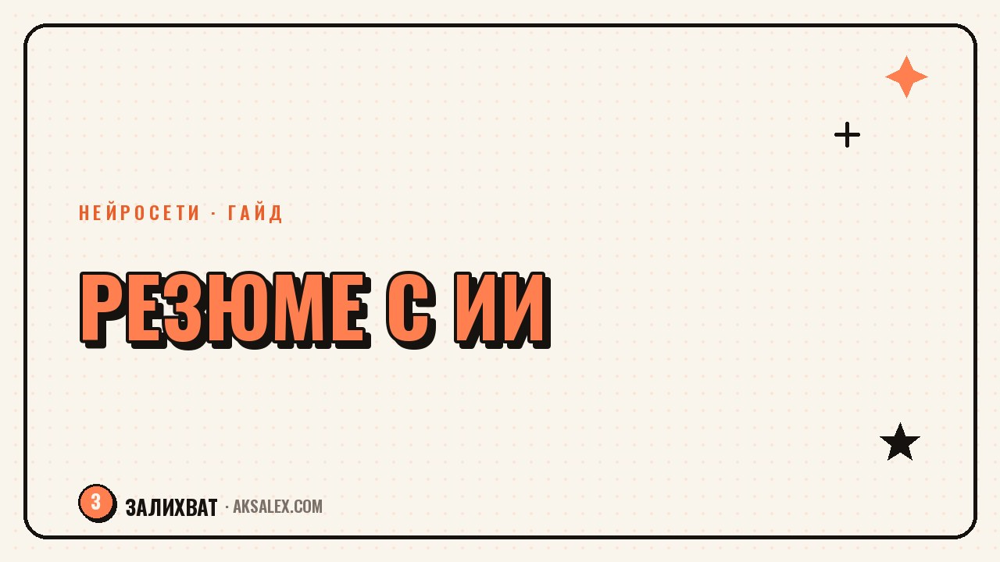

Нейросеть для резюме и сопроводительного письма: промпты

Резюме и сопроводительное письмо - это тот текст, который решает, позовут тебя на интервью или нет, а писать о себе почему-то всегда сложнее, чем о ком-то другом. Нейросеть не напишет резюме за тебя с нуля без фактов, но она отлично достраивает структуру, убирает канцелярит и помогает сформулировать достижения языком, который понятен рекрутеру.
Что нейросеть делает хорошо, а что - плохо
Нейросеть не знает твою карьеру и не придумает цифры, которых не было. Если дать ей голый список обязанностей, она выдаст такое же общее резюме, как у тысяч других кандидатов. Её сила в другом: она умеет переформулировать расплывчатое «занимался продажами» в конкретное «увеличил конверсию отдела на 18% за полгода», если ты сам дашь ей эти цифры и детали.
Поэтому первый шаг всегда один и тот же - не просить нейросеть «написать резюме», а сначала выгрузить ей все факты о своём опыте: задачи, результаты, цифры, названия проектов. Чем подробнее исходник, тем меньше в итоге общих фраз.
Промпты для резюме по шагам
Шаг 1. Сбор фактов
Промпт: «Вот список моих обязанностей и результатов на прошлой работе: [вставь список]. Задай мне 5 вопросов, которые помогут превратить это в конкретные достижения с цифрами». Нейросеть сама подскажет, каких деталей не хватает - это удобнее, чем пытаться угадать самому.
Шаг 2. Формулировка опыта
Промпт: «Перепиши этот пункт опыта в формате результат-действие-масштаб, без воды и канцелярита: [вставь пункт]». Формат «результат-действие-масштаб» работает почти всегда лучше, чем просто список обязанностей.
Шаг 3. Адаптация под вакансию
Промпт: «Вот текст вакансии: [вставь]. Вот моё резюме: [вставь]. Какие формулировки в резюме стоит усилить или переставить выше, чтобы они точнее отвечали требованиям вакансии?» Рекрутеры тратят на резюме секунды, и совпадение ключевых слов с вакансией повышает шанс дойти до интервью.
Сопроводительное письмо без клише
Самая частая ошибка сопроводительных писем - начинать с «меня заинтересовала ваша вакансия» и дальше пересказывать резюме словами. Рекрутер это уже видел сто раз. Письмо должно отвечать на один вопрос: почему именно ты и почему именно эта компания.
- Промпт: «Напиши короткое сопроводительное письмо на 5-6 предложений, которое отвечает на вопрос, почему мой опыт [перечисли факты] подходит именно для этой вакансии: [вставь текст вакансии]»
- Промпт: «Убери из этого письма общие фразы и клише, оставь только конкретику: [вставь письмо]»
- Промпт: «Сократи это письмо до 4 предложений, сохранив главный аргумент»
Я перестала писать «ответственная и целеустремлённая» после того, как попросила нейросеть показать, сколько раз эти слова встречаются в типичных сопроводительных письмах - оказалось, почти в каждом втором, - делится своим опытом одна из читательниц блога про поиск работы.
После того как черновик готов, стоит прочитать письмо вслух - если фраза звучит неестественно для живой речи, её стоит переписать. Нейросеть иногда оставляет обороты, которые выглядят гладко на бумаге, но не похожи на то, как ты реально говоришь о себе.
Сравнение инструментов для резюме
| Инструмент | Для чего подходит | Цена | Особенность |
|---|---|---|---|
| ChatGPT / YandexGPT | Текст резюме и письма с нуля по промптам | Бесплатные версии есть | Гибкость, нужны точные промпты |
| Canva | Готовый шаблон оформления резюме | Бесплатно с платными шаблонами | Удобно для визуальной подачи |
| Rezume.me и аналоги | Готовые блоки резюме под отрасль | Платная подписка | Быстрый старт без промптов |
| Grammarly / Главред | Проверка стиля и канцелярита | Бесплатная базовая версия | Для финальной вычитки текста |
Типичные ошибки при работе с нейросетью
Самая распространённая ошибка - копировать готовый ответ нейросети в резюме без правок. Текст получается гладким, но безликим, и опытный рекрутер такое видит сразу - резюме, написанные одной и той же нейросетью без правок, часто похожи друг на друга по структуре фраз.
Вторая ошибка - просить нейросеть «добавить ключевые навыки», не уточняя, какие именно. В ответ она добавит общий список вроде «коммуникабельность, стрессоустойчивость», который не несёт никакой информации рекрутеру и только раздувает текст.
Третья ошибка - не проверять факты. Если нейросеть сформулировала достижение красиво, но цифра в итоге не соответствует реальности, на интервью это легко вскроется в первом же уточняющем вопросе. Любой сгенерированный текст нужно сверять с реальным опытом перед отправкой.
Частые вопросы
Можно ли полностью доверить нейросети написание резюме?
Нет, потому что она не знает твои реальные достижения и цифры. Лучше использовать её как редактора: ты даёшь факты, она помогает их структурировать и убрать канцелярит.
Стоит ли писать в резюме, что оно составлено с помощью нейросети?
Обычно нет смысла - важен результат, а не инструмент. Рекрутера интересует, насколько точно резюме описывает твой опыт, а не то, как оно было написано.
Как адаптировать одно резюме под разные вакансии быстро?
Держи базовую версию со всеми фактами и достижениями, а для каждой вакансии проси нейросеть переставить акценты под конкретные требования. Это быстрее, чем переписывать резюме с нуля каждый раз.
Какая нейросеть лучше для резюме на русском языке?
Большинство популярных чат-ботов справляются с русским текстом неплохо, выбор скорее зависит от доступности и бесплатного лимита. Главное - давать подробные промпты с конкретными фактами, а не общие просьбы.
Как понять, что сопроводительное письмо получилось удачным?
Прочитай его вслух и проверь, отвечает ли оно на вопрос «почему именно я и почему именно эта компания». Если письмо можно отправить в любую другую компанию без изменений, его стоит переписать.
Раз тема оказалась полезной, вот что почитать следующим. Разбираем семейный фотоархив с нейросетями: сортировка, реставрация старых снимков, раскраска и бюджет на всё это.
Читать статью →а не вручную